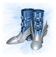
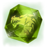

| 交換アイテム名称 | 画像 | 交換可能回数＊1 | 必要 ポイント | 交換アイテム説明 | 獲得アイテム名称 | 画像 | 数量 | 不可 | アイテム説明 |
|---|---|---|---|---|---|---|---|---|---|
| クラスチェンジコイン | 2個 | 50,000 | 使用すると、クラスチェンジUIが開かれクラスチェンジを行うことができます。 | ※クラスチェンジコインはクラスチェンジ完了時に消失されます。 クラスチェンジ中にUIを途中で閉じた場合には消失しません。 ※クラスチェンジシステムに関する詳しい内容はこちらをご確認ください。 |
|||||
| アンシャルの英雄魔法研磨書(刻印) | 1個 | 100,000 | 英雄等級のスキル研磨に必要なアイテムです。 | ★2025-12追加アイテム | 移動、削除、追加倉庫 | 詳しくはスキル研磨システムをご確認ください。 | |||
| 騎士団のコイン箱 6個 | 1回 | 100 | 使用時、「騎士団のコイン」を獲得します。 | 騎士団のコイン | 1,000,000枚 | 移動、削除 | 使用時、「騎士団のコイン」を1,000,000枚獲得します。 | ||
| +4 ルームティスイヤリング選択箱(イベント) | 1回 | 50,000 | いずれかのルームティスのイアリング１つを選択して獲得することができます。 | +4 ルームティス レッド イアリング +4 ルームティス ブルー イアリング +4 ルームティス パープル イアリング +4 ルームティス ブラック イアリング |
いずれか１つ | ||||
| +4 スナッパーのリング選択箱(イベント) | 1回 | 50,000 | いずれかのスナッパーのリング１つを選択して獲得することができます。 | +4 スナッパーの体力リング +4 スナッパーの魔法抵抗リング +4 スナッパーの知恵リング +4 スナッパーの勇士リング |
いずれか１つ | ||||
| +3 ルームティスペンダント選択箱(イベント) | 1回 | 50,000 | いずれかのスナッパーのリング１つを選択して獲得することができます。 | +3 ルームティスの闘士のペンダント +3 ルームティスの射手のペンダント +3 ルームティスの賢者のペンダント +3 ルームティスのハンターのペンダント |
いずれか１つ | ||||
| +3 合成インシグニア選択箱(イベント) | 1回 | 50,000 | いずれかの守護紋章１つを選択して獲得することができます。 | +3 闘士の守護インシグニア +3 射手の守護インシグニア +3 賢者の守護インシグニア |
いずれか１つ | ||||
| +3 合成紋章選択箱(イベント) | 1回 | 50,000 | いずれかの守護紋章１つを選択して獲得することができます。 | +3 闘士の守護紋章 +3 射手の守護紋章 +3 賢者の守護紋章 |
いずれか１つ | ||||
| 凍りついたマジックドールの箱 | 1回 | 15,000 | 使用時、「凍りついたデスナイト」といずれかの「凍りついた潜在力強化スクロール」を獲得することができます。 | 凍りついたデスナイト | １つ | 追加防御力+2 ダメージ減少+3 EXP+10% 祝福消耗率8% ※獲得後から３０日間または削除日まで使用することができます。 |
|||
| 凍りついた潜在力強化スクロール(ダメージ減少) 凍りついた潜在力強化スクロール(AC増加) 凍りついた潜在力強化スクロール(MR増加) 凍りついた潜在力強化スクロール(HP増加) 凍りついた潜在力強化スクロール(MP増加) 凍りついた潜在力強化スクロール(DG増加) 凍りついた潜在力強化スクロール(HP絶対回復) 凍りついた潜在力強化スクロール(MP絶対回復) 凍りついた潜在力強化スクロール(すべての属性抵抗) 凍りついた潜在力強化スクロール(すべてのステータス) |
いずれか１つ | ※「凍りついた潜在力強化スクロール」は「凍りついたデスナイト」に1回のみ使用できます。 ※既に潜在力が付与されている「凍りついたデスナイト」に対して上記のスクロールを使用しても効果の付与や上書きは行えません。 |
|||||||
| 戦場の成長支援箱 | 1回 | 50,000 | 使用時、右記のアイテムを獲得することができます | 祝福の加護 | 1個 | 移動、削除、倉庫、追加倉庫 |
所持時、獲得EXPが+50％されます。 ※獲得後から３０日間または削除日まで使用することができます。 |
||
| 戦場のエリクサー(EXP)キューブ | 30個 | 移動、削除、倉庫、追加倉庫 |
使用時、「ピュア エリクサー(EXP)」を獲得することができます。 ※このアイテムは1日に1回使用することが出来ます。 |
||||||
| 戦場のドラゴンキューブ | 30個 | 移動、削除、倉庫、追加倉庫 |
使用時、「ドラゴンの高級ダイアモンド(刻印)」を獲得することができます。 ※このアイテムは1日に1回使用することが出来ます。 |
||||||
| 戦場の成長キューブ | 30個 | 移動、削除、倉庫、追加倉庫 |
使用時、「光る成長のポーション(イベント)」を獲得することができます。 ※このアイテムは1日に1回使用することが出来ます。 |
||||||
| エリクサー100％製作券(イベント) | 1回 | 50,000 | エリクサー100％製作券(イベント) | 移動、削除、追加倉庫 | NPCフレアにて「ピュア エリクサー」35個、「邪悪な活力」80個と共に「エリクサー」の製作材料にすることができます。 | ||||
| 装身具強化券選択箱 | 2回 | 50,000 | 使用時、右記のアイテムの中から1つを選択して獲得することができます。 | ルームティス イアリング強化券(イベント) | 1個 | 移動、削除 | NPCフレアにて+4～7の一般/祝福されたルームティスのイアリングの強化製作の材料にすることができます。 ※ルームティスのイアリング(刻印)には使用できません。 ※+5への強化は確定製作、+6～+8への製作は確率強化製作となります。確率はゲーム内をご確認ください。※レート抜粋 |
||
| スナッパー リング強化券(イベント) | 1個 | 移動、削除 | NPCフレアにて+4～7の一般/祝福されたスナッパーのリングの強化製作の材料にすることができます。 ※スナッパーのリング(刻印)には使用できません。 ※+5への強化は確定製作、+6～+8への製作は確率強化製作となります。確率はゲーム内をご確認ください。※レート抜粋 |
||||||
| 紋章強化券(イベント) | 1個 | 移動、削除 | NPCフレアにて+4～7の守護紋章の強化製作の材料にすることができます。 ※+5への強化は確定製作、+6～+8への製作は確率強化製作となります。確率はゲーム内をご確認ください。※レート抜粋 |
||||||
| インシグニア強化券(イベント) | 1個 | 移動、削除 | NPCフレアにて+4～7の守護インシグニアの強化製作の材料にすることができます。 ※+5への強化は確定製作、+6～+8への製作は確率強化製作となります。確率はゲーム内をご確認ください。※レート抜粋 |
||||||
| ペンダント強化券(イベント) ★2025-12追加アイテム |
1個 | 移動、削除 | NPCフレアにて+4～7のルームティスのペンダントの強化製作の材料にすることができます。 ※+5への強化は確定製作、+6～+8への製作は確率強化製作となります。確率はゲーム内をご確認ください。※レート抜粋 |
||||||
| ブレスレット強化券(イベント) ★2025-12追加アイテム |
1個 | 移動、削除 | NPCフレアにて+3～5のブレスレットの強化製作の材料にすることができます。 ※+4への強化は確定製作、+5～+6への製作は確率強化製作となります。確率はゲーム内をご確認ください。※レート抜粋 |
||||||
| エリクサー(EXP)100％製作券(イベント) | 1回 | 5,000 | エリクサー(EXP)100％製作券(イベント) | 移動、削除、追加倉庫 | NPCフレアにて「ピュア エリクサー(EXP)」35個と共に「エリクサー(EXP)」の製作材料にすることができます。 | ||||
| カルバ トロフェウム | 1回 | 5,000 | カルバ トロフェウム | 移動、削除、倉庫、追加倉庫 | 所持していると、ドラゴンのダイアモンドを材料にした狩り場図鑑報酬受取時、獲得EXPが上昇します。 ※獲得後から３０日間または削除日まで使用することができます。 ※「カルバ トロフィー」所持時、同時に効果を発揮します。 ※Lv95以上になると自動的に消滅します。 |
||||
| カルバ トロフィー | 1回 | 3,000 | カルバ トロフィー | 移動、削除、倉庫、追加倉庫 | 所持していると、ドラゴンのダイアモンドを材料にした狩り場図鑑報酬受取時、獲得EXPが上昇します。 ※獲得後から３０日間または削除日まで使用することができます。 ※「カルバ トロフェウム」所持時、同時に効果を発揮します。 |
||||
| ピュア エリクサーの箱 | 5回 | 5,000 | ピュア エリクサーの箱 | 1～10個 | 移動、削除、追加倉庫 | 使用時、1～10個の「ピュア エリクサー」を獲得することができます。 | |||
| ピュア エリクサー(EXP)の箱 | 5回 | 5,000 | ピュア エリクサー(EXP)の箱 | 1～10個 | 移動、削除 | 使用時、1～10個の「ピュア エリクサー(EXP)」を獲得することができます。 | |||
| ミソフィアのスポールダー | 3回 | 3,000 | ミソフィアのスポールダー | 移動 | クラス:[全クラス] AC:-4 ダメージ減少:+1 MR:+4 最大HP:+40 |
||||
| ミソフィアのブーツ |  | 3回 | 3,000 | ミソフィアのブーツ | 移動 | クラス:[全クラス] AC:3 ダメージ減少:+1 |
|||
| アラガンス ゲートル | 3回 | 3,000 | アンガラス ゲートル | 移動 | クラス:[全クラス] AC:3 ダメージ減少:+1 最大HP+20 最大MP+18 |
||||
| アインハザードの加護:7日(イベント) |  | 4回 | 5,000 | アインハザードの加護:7日(イベント) | 移動、削除 | 使用時、7日間アインハザードの加護を受ける事ができます。 | |||
| 特別な勇猛のメダル箱 | 5回 | 5,000 | 勇猛のメダル | 10～50枚 | 移動、削除 | 使用時、確率で勇猛のメダル10～50枚を獲得することができます。 | |||
| 光る成長のポーション(イベント) | 制限なし | 500 | 光る成長のポーション(イベント) | 移動、削除 | 持続時間:1,800秒 祝福EXP:+80% ネットカフェ接続時:EXP:+20%(合計で+100％増加) ※Safety Zoneにいる間はバフの時間が進行しません。 |
||||
| ケプリシャのオラクル 10個 | 1回 | 50,000 | ケプリシャのオラクル | 10個 | ケプリシャ ステータス獲得のためにカードガチャで使用するアイテムです。 |